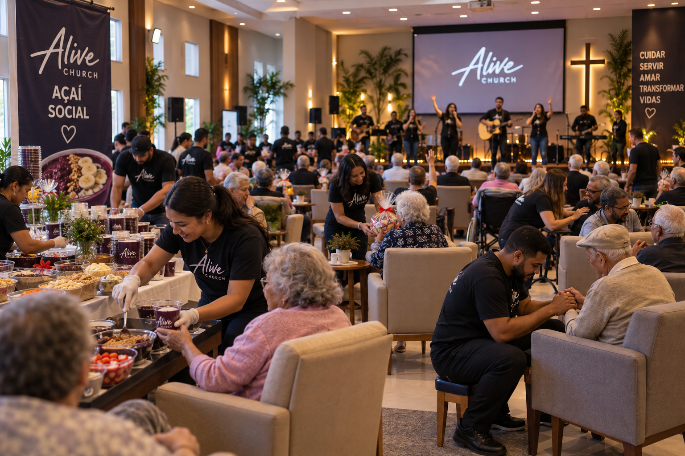
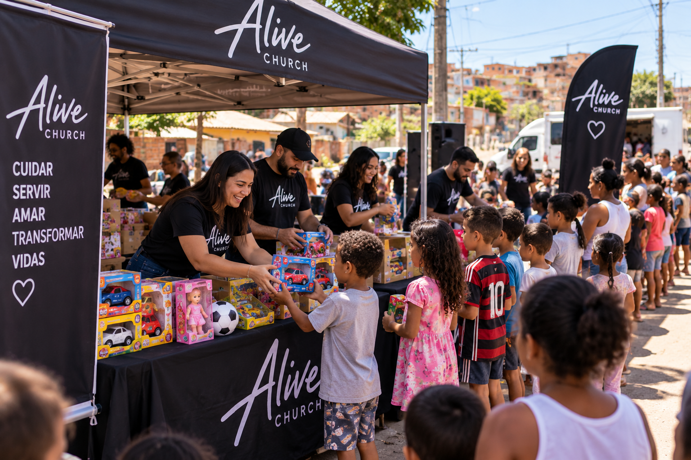

IDOSOS
Ação social com idosos
Ação voltada ao cuidado e acolhimento de idosos, proporcionando momentos de atenção, convivência e interação com os voluntários.
Conheça algumas das ações desenvolvidas pelo Ministério de Assistência Social.
O Ministério de Assistência Social da Alive Church busca promover ações de cuidado, acolhimento e apoio à comunidade, mobilizando voluntários para servir pessoas em diferentes situações.

Ação voltada ao cuidado e acolhimento de idosos, proporcionando momentos de atenção, convivência e interação com os voluntários.

Ação realizada com crianças da comunidade, promovendo momentos de acolhimento, interação e cuidado por meio do trabalho voluntário.
As ações sociais contam com a participação de pessoas dispostas a contribuir com seu tempo, conhecimento e habilidades para servir à comunidade.
Se você deseja participar das próximas ações, faça seu cadastro como voluntário.
Quero ser voluntárioAs doações também podem contribuir para a realização das ações sociais e para o atendimento das necessidades identificadas pelo ministério.
As informações sobre campanhas e necessidades específicas podem ser divulgadas de acordo com cada ação realizada pela Assistência Social.